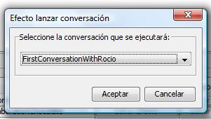

Efecto Lanzar Conversación
Mediante este efecto se inicia una conversación.
Crear un efecto lanzar conversación:
- Seleccionar el efecto: seleccionar el efecto en el
panel de creación de efectos. Pulsar el botón OK.
- Panel de creación del efecto: a
continuación nos aparecerá el siguiente panel:
En él se puede elegir entre las conversaciones existentes
en el capítulo actual.